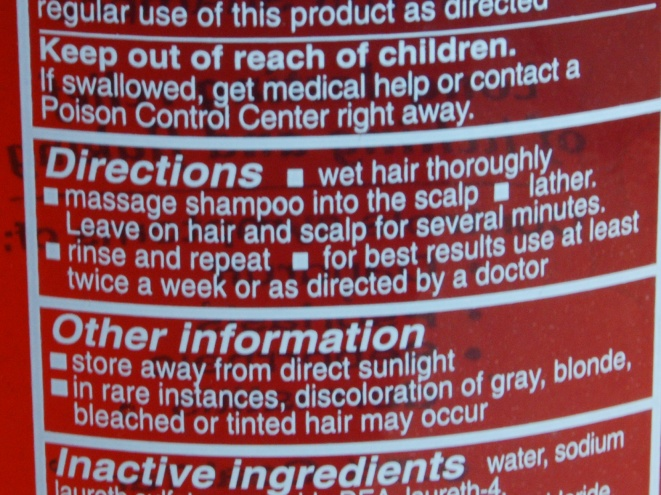

A generic sort, for example, needs to know how to compare values. The algorithm for comparing two names has little value outside of a sort, but instead works with the code in which it's housed to accomplish the larger goal of sorting a phone book.
Public Class PhoneBookComparer
Implements IComparer(Of PersonName)
Public Function Compare _
(ByVal x As PersonName, _
ByVal y As PersonName) As Integer _
Implements IComparer(Of PersonName) _
.Compare
Dim result As Integer
result = String.Compare _
(x.Last, y.Last, True)
If result <> 0 Then
Return result
Else
Return String.Compare _
(x.First, y.First, True)
End If
End Function
End Class
phoneBook.Sort( _
New PhoneBookComparer)
public class PhoneBookComparer :
IComparer<PersonName>
{
public int Compare
(PersonName x, PersonName y)
{
int result = string.Compare
(x.Last, y.Last, true);
if (result != 0)
return result;
else
return string.Compare
(x.First, y.First, true);
}
}
phoneBook.Sort(
new PhoneBookComparer());
